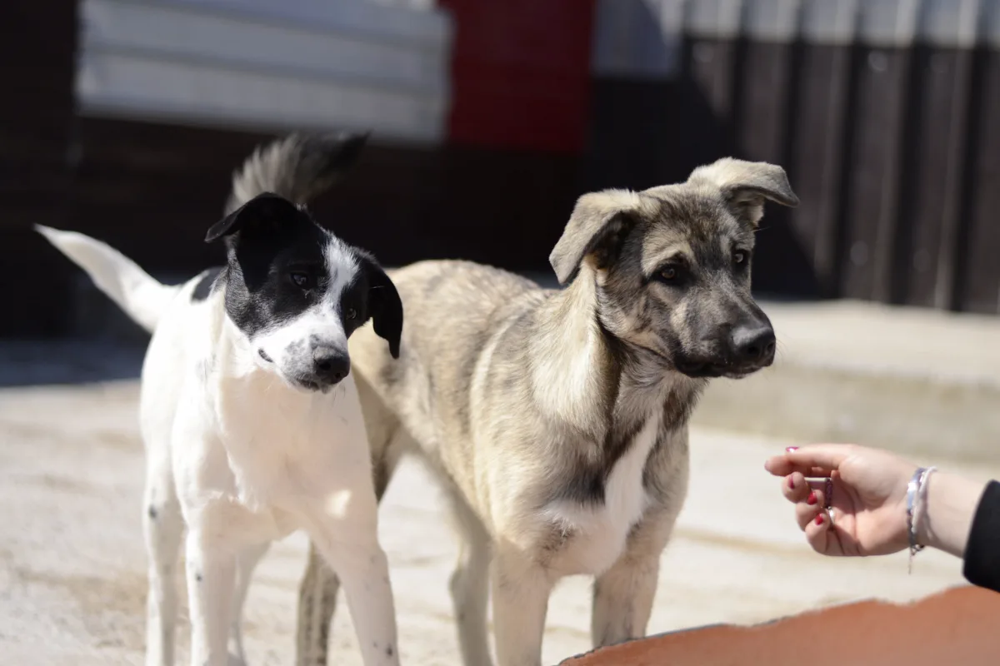
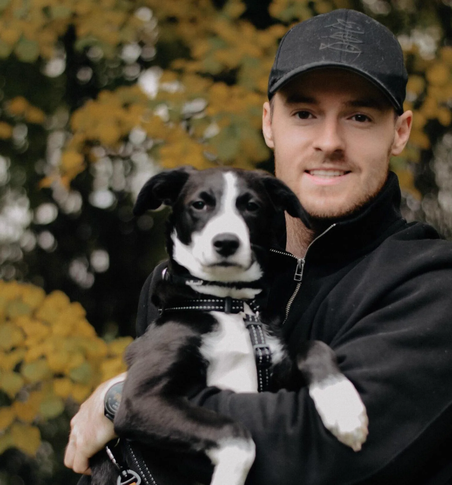
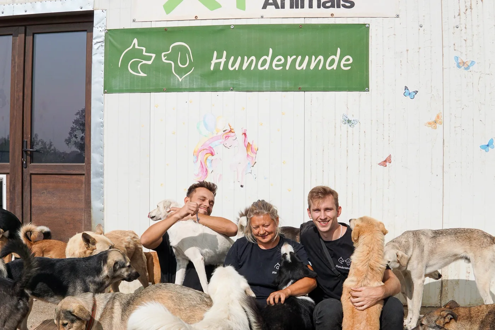
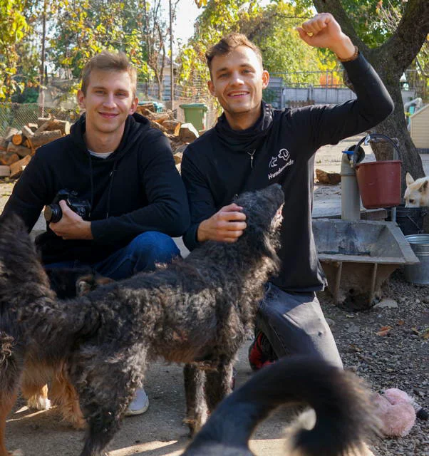
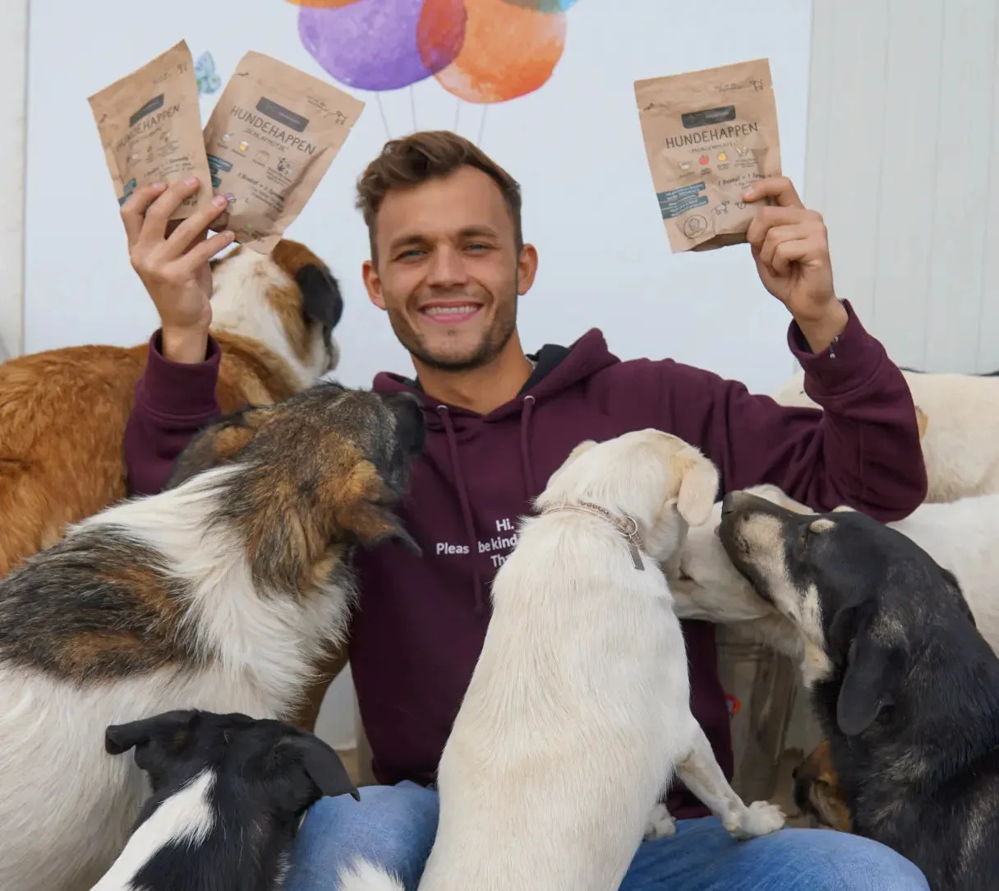
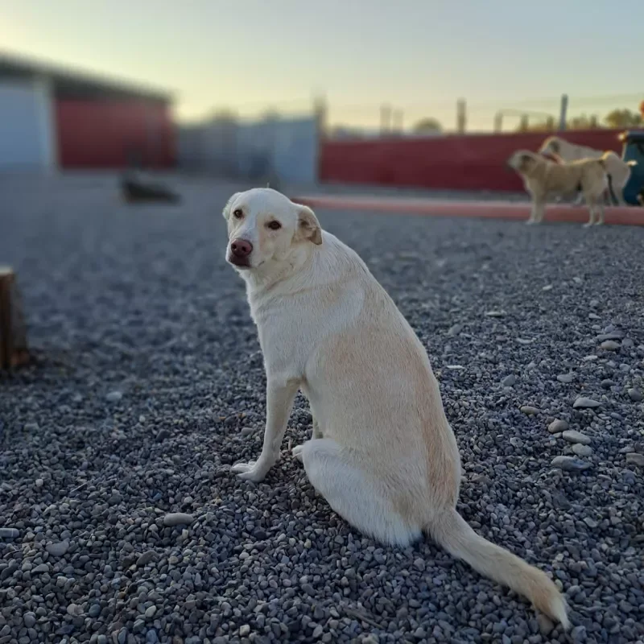
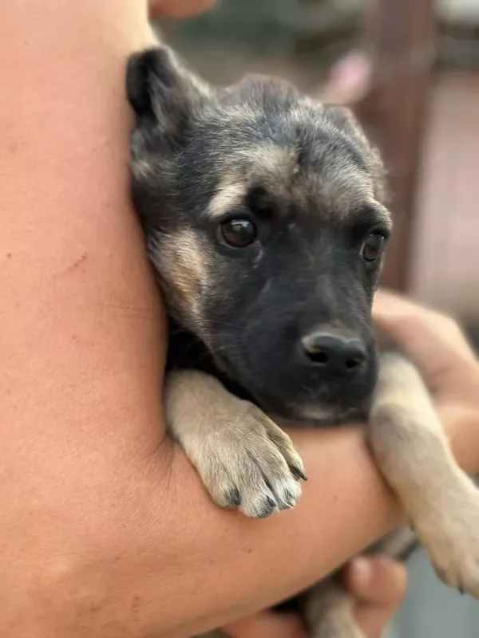

Europe4strays
My Friends
Mirela is not alone. In Germany, Sweden and Austria, these friends carry the work with her: adoptions, foster homes, donations and castration campaigns.
Germany
Tierschutzgruppe Herzensmenschen
The association is based in Germany, and its volunteer team has stood at Mirela's side for many years. They take care of adoptions, sponsorships, foster homes, donations, castrations and much more.
Their dogs are placed through foster homes in Germany, where every dog can settle and be met in person, and together with their local partners they care for around 400 dogs and cats. Visit their website, you will be delighted.


Photos: Tierschutzgruppe Herzensmenschen
Germany
Hunderunde
Hunderunde is a social startup founded by Fabio and Luis, two school friends from a village near Bonn. After seeing the plight of street dogs with their own eyes, they decided to build a company that helps: they develop vegan dog snacks and plant-based dog food, and every single product sold donates to street dogs in need.
At Mirela's side almost from their first day: they co-financed the Cheerful Kindergarten, support her every month, and travel to Romania several times a year to see that every donation arrives. They also filmed the documentary you can watch on our homepage. One look at their site is worth it!



Photos: Hunderunde
Sweden
Skayla Dog Rescue
A small, highly capable non-profit from Sweden that has supported Mirela for several years with adoptions and donations. They rescue, rehabilitate and rehome dogs from both Sweden and Romania; every dog gets training, care and a carefully matched family.
Their own website puts it beautifully: many street dogs are lucky enough to come to Mirela and Dragoș, where they get the care they need. Please visit their pages!


Photos: Skayla Dog Rescue
Austria
Helping from Austria
If you are in Austria and would like to help, or simply want to know more about us, please get in touch with Liliana.